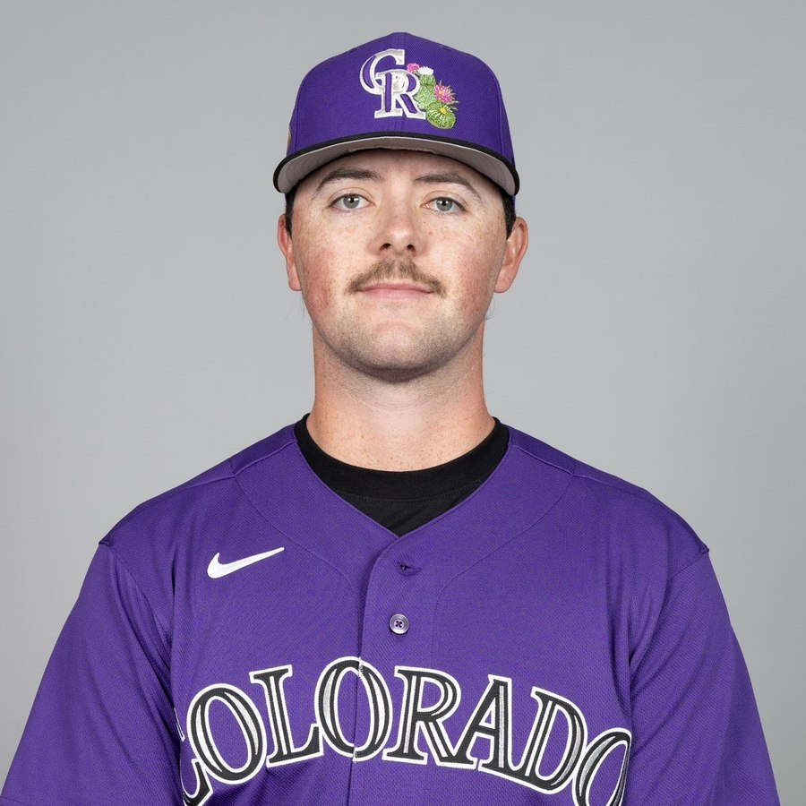

Objective plans for pitchers who want to push past internal ques and find external results.
Velocity gets a pitcher a look. These three areas are what keep him effective, healthy, and on the mound long enough to matter.
Most velocity ceilings and arm health problems trace back to how force moves through the body, not how hard someone tries to throw. We use frame-by-frame video assessment to find where a delivery is leaking energy, and fix the one or two things that actually move the needle instead of rebuilding a delivery from scratch.
Arm health isn't luck, it's math — pitch counts, intensity, and recovery, tracked across the full year instead of just game day. We build a throwing calendar around the season so it's clear exactly when to push and when to back off.
Two pitches get through a lineup once. A true arsenal — a fastball that plays off a shape-distinct breaking ball and a changeup hitters can't sit on — is what keeps a pitcher effective the third time through. We build usage plans around what a pitcher's specific shapes actually do, not a generic mix.
Coming back from an arm injury isn't a shortcut version of a healthy training plan — it's a different program, built in phases, with health as the first priority.
Built alongside your athletic trainer or physician's clearance timeline — not a replacement for medical care.Pain-free range of motion and arm care rebuilt from the ground up, aligned with your provider's clearance to begin throwing.
A structured catch-play progression. Distance and intensity increase on a schedule, not on a feeling.
Bullpens rebuilt from flat ground up. Volume and intent climb gradually as mechanics and arm health are re-confirmed at each step.
Live at-bats with workload monitored closely through the first weeks back on the mound.
I played five years of college baseball with results that never matched the effort. I walked away for a year. When I came back, I stopped training like a guy trying to copy someone else's delivery and started actually studying my own — pulling Trackman data and benchmarking it against the pro average instead of chasing a new grip every week.
The biggest finding wasn't velocity. It was extension — how far out in front of the rubber the ball is released. Mine measured around five-foot-one; the MLB average sits closer to six-foot-two. That's not a strength problem, it's a setup problem, and it pointed straight at a free adjustment: shifting my position on the rubber to buy back distance I was leaving on the table every pitch.
That process — moving more efficiently, managing workload instead of guessing, and building a full arsenal on purpose — is what got me signed to play professionally after the year I'd basically already decided I was done. It's the same process this program walks your pitcher through.
Two coaches, one process — video-based movement assessment, workload tracking, and arsenal planning applied to every athlete we work with.
Dawson spent five years playing college baseball, stepped away for a year, then rebuilt his own delivery and arsenal using video and Trackman data — a process that got him signed to play professionally. He applies the same data-driven, no-wasted-motion approach to every pitcher he coaches remotely.

[Owen's playing background, coaching experience, and credentials go here — send this over and it'll drop right in.]
Every new player starts with a free one-hour Zoom call — a movement screen on video, plus a conversation about throwing history, current season, and any physical constraints we should build around.
Having trouble with the scheduler? Email hello@example.com and we'll find a time.